SF3B1
almut
17 Mai 2019
Last updated: 2021-01-08
Checks: 6 1
Knit directory: transcriptome_cll/
This reproducible R Markdown analysis was created with workflowr (version 1.4.0). The Checks tab describes the reproducibility checks that were applied when the results were created. The Past versions tab lists the development history.
The R Markdown file has unstaged changes. To know which version of the R Markdown file created these results, you’ll want to first commit it to the Git repo. If you’re still working on the analysis, you can ignore this warning. When you’re finished, you can run wflow_publish to commit the R Markdown file and build the HTML.
Great job! The global environment was empty. Objects defined in the global environment can affect the analysis in your R Markdown file in unknown ways. For reproduciblity it’s best to always run the code in an empty environment.
The command set.seed(20190511) was run prior to running the code in the R Markdown file. Setting a seed ensures that any results that rely on randomness, e.g. subsampling or permutations, are reproducible.
Great job! Recording the operating system, R version, and package versions is critical for reproducibility.
Nice! There were no cached chunks for this analysis, so you can be confident that you successfully produced the results during this run.
Great job! Using relative paths to the files within your workflowr project makes it easier to run your code on other machines.
Great! You are using Git for version control. Tracking code development and connecting the code version to the results is critical for reproducibility. The version displayed above was the version of the Git repository at the time these results were generated.
Note that you need to be careful to ensure that all relevant files for the analysis have been committed to Git prior to generating the results (you can use wflow_publish or wflow_git_commit). workflowr only checks the R Markdown file, but you know if there are other scripts or data files that it depends on. Below is the status of the Git repository when the results were generated:
Ignored files:
Ignored: .Rhistory
Ignored: .Rproj.user/
Ignored: analysis/figure/
Ignored: output/figures/r_objects/BRAF/enrichment/
Untracked files:
Untracked: output/figures/r_objects/SF3B1/de_genes/AHSP.rds
Untracked: output/figures/r_objects/SF3B1/de_genes/ARHGEF16.rds
Untracked: output/figures/r_objects/SF3B1/de_genes/C6orf223.rds
Untracked: output/figures/r_objects/SF3B1/de_genes/CAMK4.rds
Untracked: output/figures/r_objects/SF3B1/de_genes/CAMSAP2.rds
Untracked: output/figures/r_objects/SF3B1/de_genes/CDH1.rds
Untracked: output/figures/r_objects/SF3B1/de_genes/CKM.rds
Untracked: output/figures/r_objects/SF3B1/de_genes/CPT1C.rds
Untracked: output/figures/r_objects/SF3B1/de_genes/E2F4.rds
Untracked: output/figures/r_objects/SF3B1/de_genes/ELOVL7.rds
Untracked: output/figures/r_objects/SF3B1/de_genes/EPDR1.rds
Untracked: output/figures/r_objects/SF3B1/de_genes/FAM184A.rds
Untracked: output/figures/r_objects/SF3B1/de_genes/FOSL1.rds
Untracked: output/figures/r_objects/SF3B1/de_genes/HAVCR1.rds
Untracked: output/figures/r_objects/SF3B1/de_genes/HPCAL4.rds
Untracked: output/figures/r_objects/SF3B1/de_genes/IFI44L.rds
Untracked: output/figures/r_objects/SF3B1/de_genes/IGKV1-17.rds
Untracked: output/figures/r_objects/SF3B1/de_genes/IGKV1-33.rds
Untracked: output/figures/r_objects/SF3B1/de_genes/IL22RA1.rds
Untracked: output/figures/r_objects/SF3B1/de_genes/KIF27.rds
Untracked: output/figures/r_objects/SF3B1/de_genes/KIF7.rds
Untracked: output/figures/r_objects/SF3B1/de_genes/KIFC1.rds
Untracked: output/figures/r_objects/SF3B1/de_genes/LINC02102.rds
Untracked: output/figures/r_objects/SF3B1/de_genes/LINC02298.rds
Untracked: output/figures/r_objects/SF3B1/de_genes/LMOD1.rds
Untracked: output/figures/r_objects/SF3B1/de_genes/LOXL2.rds
Untracked: output/figures/r_objects/SF3B1/de_genes/MX1.rds
Untracked: output/figures/r_objects/SF3B1/de_genes/NEDD4.rds
Untracked: output/figures/r_objects/SF3B1/de_genes/NRIR.rds
Untracked: output/figures/r_objects/SF3B1/de_genes/PALD1.rds
Untracked: output/figures/r_objects/SF3B1/de_genes/PLXNB1.rds
Untracked: output/figures/r_objects/SF3B1/de_genes/RAI1.rds
Untracked: output/figures/r_objects/SF3B1/de_genes/RIBC2.rds
Untracked: output/figures/r_objects/SF3B1/de_genes/RLN3.rds
Untracked: output/figures/r_objects/SF3B1/de_genes/RNF112.rds
Untracked: output/figures/r_objects/SF3B1/de_genes/S100A2.rds
Untracked: output/figures/r_objects/SF3B1/de_genes/SLC4A1AP.rds
Untracked: output/figures/r_objects/SF3B1/de_genes/SOX8.rds
Untracked: output/figures/r_objects/SF3B1/de_genes/TFCP2L1.rds
Untracked: output/figures/r_objects/SF3B1/de_genes/TGM1.rds
Untracked: output/figures/r_objects/SF3B1/de_genes/TNXB.rds
Untracked: output/figures/r_objects/SF3B1/de_genes/TPM3P7.rds
Untracked: output/figures/r_objects/SF3B1/de_genes/USP18.rds
Untracked: output/figures/r_objects/SF3B1/enrich_dot2.rds
Untracked: output/figures/r_objects/SF3B1/enrich_dot_hm.rds
Untracked: output/figures/r_objects/SF3B1/enrich_net_hm.rds
Untracked: output/figures/r_objects/SF3B1/enrich_net_kegg.rds
Unstaged changes:
Modified: analysis/SF3B1.Rmd
Modified: output/enrichment/SF3B1_gsea.rds
Modified: output/figures/r_objects/SF3B1/SF3B1_enrichment_dn.rds
Modified: output/figures/r_objects/SF3B1/SF3B1_enrichment_up.rds
Modified: output/figures/r_objects/SF3B1/SF3B1_heatmap.rds
Modified: output/figures/r_objects/SF3B1/de_genes/ADAM11.rds
Modified: output/figures/r_objects/SF3B1/de_genes/BNIP3P41.rds
Modified: output/figures/r_objects/SF3B1/de_genes/CRYBA4.rds
Modified: output/figures/r_objects/SF3B1/de_genes/CRYBB1.rds
Modified: output/figures/r_objects/SF3B1/de_genes/FBLN2.rds
Modified: output/figures/r_objects/SF3B1/de_genes/FBN1.rds
Modified: output/figures/r_objects/SF3B1/de_genes/FOXRED1.rds
Modified: output/figures/r_objects/SF3B1/de_genes/FSTL3.rds
Modified: output/figures/r_objects/SF3B1/de_genes/GYPB.rds
Modified: output/figures/r_objects/SF3B1/de_genes/HBG2.rds
Modified: output/figures/r_objects/SF3B1/de_genes/IFI27.rds
Modified: output/figures/r_objects/SF3B1/de_genes/IGHV3-21.rds
Modified: output/figures/r_objects/SF3B1/de_genes/LRRC75A-AS1.rds
Modified: output/figures/r_objects/SF3B1/de_genes/MICF.rds
Modified: output/figures/r_objects/SF3B1/de_genes/NLRP2B.rds
Modified: output/figures/r_objects/SF3B1/de_genes/P2RX6.rds
Modified: output/figures/r_objects/SF3B1/de_genes/PIPOX.rds
Modified: output/figures/r_objects/SF3B1/de_genes/PLEKHG4B.rds
Modified: output/figures/r_objects/SF3B1/de_genes/PRSS50.rds
Modified: output/figures/r_objects/SF3B1/de_genes/PSD2.rds
Modified: output/figures/r_objects/SF3B1/de_genes/RASSF6.rds
Modified: output/figures/r_objects/SF3B1/de_genes/SHB.rds
Modified: output/figures/r_objects/SF3B1/de_genes/SLC22A14.rds
Modified: output/figures/r_objects/SF3B1/de_genes/SRRM5.rds
Modified: output/figures/r_objects/SF3B1/de_genes/TAS1R1.rds
Modified: output/figures/r_objects/SF3B1/de_genes/UQCC1.rds
Modified: output/figures/r_objects/SF3B1/de_genes/WIF1.rds
Modified: output/figures/r_objects/ighv/ighv_heatmap.rds
Note that any generated files, e.g. HTML, png, CSS, etc., are not included in this status report because it is ok for generated content to have uncommitted changes.
These are the previous versions of the R Markdown and HTML files. If you’ve configured a remote Git repository (see ?wflow_git_remote), click on the hyperlinks in the table below to view them.
| File | Version | Author | Date | Message |
|---|---|---|---|---|
| html | 41af4bf | aluetge | 2019-11-19 | Build site. |
| Rmd | 7c994cf | aluetge | 2019-11-19 | wflow_publish(c(“analysis/del11q22.Rmd”, “analysis/SF3B1.Rmd”, “analysis/trisomy12.Rmd”)) |
| html | 026e8e9 | aluetge | 2019-11-18 | Build site. |
| html | e6f3dd0 | aluetge | 2019-11-13 | Build site. |
| Rmd | 109e2cf | aluetge | 2019-11-13 | wflow_publish(c(“analysis/Notch1.Rmd”, “analysis/SF3B1.Rmd”, “analysis/TP53.Rmd”)) |
| html | 3514378 | aluetge | 2019-05-17 | Build site. |
| Rmd | 5de142b | aluetge | 2019-05-17 | Add more variants |
SF3B1 signature
Differentially expressed genes
1. Differential expression analysis
load packages
library(DESeq2)
library(tidyverse)
library(ggsci)
library(matrixStats)
library(piano)
library(reshape2)
library(genefilter)
library(Biobase)
library(ComplexHeatmap)
library(ggplot2)
library(gtable)
library(grid)
library(circlize)
library(gridExtra)
library(ggpubr)
library(RColorBrewer)
library(clusterProfiler)
library(msigdbr)
library(org.Hs.eg.db)
library(enrichplot)
library(here)load data
data_dir <- here("data")
output_dir <- here("output")
figure_dir <- here("output/figures")
#dds data set. gene expression data + patmetadata
load(paste0(data_dir, "/ddsrnaCLL_150218.RData"))
variant <- "SF3B1"
#filter for patients without NA in variant
ddsCLL <- ddsCLL[, !is.na(colData(ddsCLL)[,variant])]
#differentially expressed genes between SF3B1 groups (see differential expression.html)
diff_all <- read.csv(file=paste0(output_dir, "/diff_genes/", variant, "_diffGenes.csv"))
rownames(diff_all) <- diff_all$X
diff_all <- diff_all[which(diff_all$padj < 0.01 ),-1]
diff <- diff_all[which( abs(diff_all$stat) > 5),]
mutStatus <- data.frame(colData(ddsCLL)) %>% arrange(SF3B1)
colnames(ddsCLL) <-colData(ddsCLL)$PatID
ddsCLL <- ddsCLL[, mutStatus$PatID]
#expression data
ddsCLL <- estimateSizeFactors(ddsCLL)
RNAnorm <- varianceStabilizingTransformation(ddsCLL, blind = T)Expression matrix
#filter for sign. genes in variant
exprMat <- assay(RNAnorm)
exprVariant <- exprMat[rownames(diff),]
colnames(exprVariant) <- colData(ddsCLL)$PatID
exprVariant.new <- log2(exprVariant)
exprVariant.new <- t(scale(t(exprVariant.new)))
exprVariant.new[exprVariant.new > 4] <- 4
exprVariant.new[exprVariant.new < -4] <- -4
rownames(exprVariant.new) <- rowData(RNAnorm[rownames(diff),])$symbolExpression signature
#colors
colors = colorRamp2(c(-4,-1,0,1,4), c("#2166ac","#4393c3", "#f7f7f7", "#d6604d","#b2182b"))
annocol <- get_palette("jco", 10)
annocolor <- list(SF3B1 = c("1" = annocol[8], "0" = annocol[9]))
rowcolors <-colorRampPalette(brewer.pal(5, "Set1"))(5)
rowcolors[6] <- "white"
feature <- as.data.frame(colData(ddsCLL)[,c(variant)])
colnames(feature) <- c(variant)
ha_col <- HeatmapAnnotation(df = feature, col = annocolor, annotation_height = unit(c(rep(1.9, 1)), "cm"),
simple_anno_size = unit(1, "cm"),
annotation_name_gp = gpar(fontsize = 22, fontface = "bold"),
annotation_legend_param = list(title_gp = gpar(fontsize = 23),
labels_gp = gpar(fontsize = 18),
grid_height = unit(1.2, "cm"),
grid_width = unit(1.2, "cm")))
#Annotate top 50 genes
diff <- diff_all[which(abs(diff_all$stat) > 6),]
sub_names <- unique(diff$Symbol)
geneIDs <- which(rownames(exprVariant.new) %in% sub_names)
rownames(exprVariant.new)[-geneIDs] <- ""
h1 <- Heatmap(exprVariant.new ,
km = 2,
gap = unit(0.5, "cm"),
cluster_columns = F,
clustering_distance_rows = "pearson",
clustering_method_rows = "ward.D2",
column_title = paste0("Gene signature: ", variant),
col = colors,
column_title_gp = gpar(fontsize = 25, fontface = "bold"),
heatmap_legend_param = list(title = "expr",
title_gp = gpar(fontsize = 23),
grid_height = unit(1.5, "cm"),
grid_width = unit(1.2, "cm"),
gap = unit(2, "cm"),
labels_gp = gpar(fontsize = 18)),
column_dend_height = unit(1, "cm"),
show_row_dend = FALSE,
show_column_names = FALSE ,
show_row_names = TRUE,
row_names_gp = gpar(fontsize = 17),
top_annotation = ha_col)
#svg(filename=paste0(figure_dir, "/", variant, "_gene_expr.svg"), width=30, height=45)
#pdf(file=paste0(figure_dir, "/", variant, "_gene_expr.pdf"), width=22, height=25)
draw(h1) 
#dev.off()
saveRDS(h1, file = paste0(output_dir, "/figures/r_objects/SF3B1/SF3B1_heatmap.rds"))Sample and gene specific expression - top genes
#function to create stripchart plots for specific genes
gene_count <- function(gene_nam){
geneEnsID <- rownames(ddsCLL)[which(rowData(ddsCLL)$symbol %in% gene_nam)]
gc <- plotCounts(ddsCLL, gene = geneEnsID, intgroup = variant, returnData=TRUE)
p <- ggboxplot(gc, x = variant, y = "count",
color = variant,
size = 1.2,
palette = "jco",
outlier.shape = NA,
add = "jitter",
add.params = list(size = 2.5),
yscale = "log10",
title = paste(gene_nam),
font.x = 20, font.y = 20, font.legend = 20,
ylab = "normalized counts") + font("xy.text", size = 20) + font("title", size = 20, face = "bold")
saveRDS(p, file = paste0(output_dir, "/figures/r_objects/SF3B1/de_genes/", gene_nam, ".rds"))
p
}
diff <- diff_all[which(diff_all$stat > 5),]
geneList <- as.character(diff$Symbol)
lapply(geneList, gene_count)[[1]]
[[2]]
[[3]]
[[4]]
[[5]]
[[6]]
[[7]]
[[8]]
[[9]]
[[10]]
[[11]]
[[12]]
[[13]]
[[14]]
[[15]]
[[16]]
[[17]]
[[18]]
[[19]]
[[20]]
[[21]]
| Version | Author | Date |
|---|---|---|
| 41af4bf | aluetge | 2019-11-19 |
[[22]]
| Version | Author | Date |
|---|---|---|
| 41af4bf | aluetge | 2019-11-19 |
[[23]]
| Version | Author | Date |
|---|---|---|
| 41af4bf | aluetge | 2019-11-19 |
[[24]]
[[25]]
[[26]]
[[27]]
[[28]]
[[29]]
[[30]]
[[31]]
[[32]]
[[33]]
[[34]]
[[35]]
[[36]]
[[37]]
[[38]]
[[39]]
[[40]]
[[41]]
[[42]]
[[43]]
[[44]]
[[45]]
[[46]]
[[47]]
[[48]]
[[49]]
[[50]]
[[51]]
[[52]]
[[53]]
[[54]]
[[55]]
[[56]]
[[57]]
[[58]]
[[59]]
[[60]]
[[61]]
[[62]]
[[63]]
[[64]]
[[65]]
[[66]]
[[67]]
[[68]]
[[69]]
[[70]]
Gene set enrichment analysis
Gene sets
#load gene set collection
#Hallmark
gsc <- loadGSC("/home/almut/Dokumente/masterarbeit/data/h.all.v6.0.symbols.gmt", type="gmt")
#Kegg
gsc_Kegg <- loadGSC("/home/almut/Dokumente/masterarbeit/data/c2.cp.kegg.v6.0.symbols.gmt", type="gmt")
#get all de outputs
load(paste0(output_dir,"/desRes_250720.RData"))
difftab <- function(condition){
dataTab <- data.frame(res_list[[condition]])
dataTab$ID <- rownames(dataTab)
#filter using pvalues
dataTab <- dataTab %>%
arrange(padj) %>%
mutate(Symbol = rowData(ddsCLL[ID,])$symbol)# %>%
#filter(abs(log2FoldChange) > 2)
dataTab <- dataTab[!duplicated(dataTab$Symbol),]
dataTab <- dataTab[!is.na(dataTab$Symbol),]
rownames(dataTab) <- dataTab$ID
dataTab
}
diff_res <- difftab(variant)
#clusterProfiler
diff_res <- diff_res[-which(diff_res$Symbol %in% c("", NA)),]
gene_list <- diff_res$stat %>% set_names(diff_res$Symbol)
gene_list <- sort(gene_list, decreasing = TRUE)
gene_lfc <- diff_res$log2FoldChange %>% set_names(diff_res$Symbol)
gene_lfc <- sort(gene_lfc, decreasing = TRUE)
de_gene <- diff_res %>% filter(padj < 0.01)
de_gene <- de_gene$Symbol
de_ens <- diff_res %>% filter(padj < 0.01)
de_ens <- de_ens$ID
#Get Gene IDs
gene_id <- bitr(de_ens, fromType = "ENSEMBL",
toType = c("ENTREZID", "SYMBOL"),
OrgDb = org.Hs.eg.db)'select()' returned 1:many mapping between keys and columnsWarning in bitr(de_ens, fromType = "ENSEMBL", toType = c("ENTREZID",
"SYMBOL"), : 11.89% of input gene IDs are fail to map...gene_list_id <- bitr(diff_res$ID, fromType = "ENSEMBL",
toType = c("ENTREZID", "SYMBOL"),
OrgDb = org.Hs.eg.db)'select()' returned 1:many mapping between keys and columnsWarning in bitr(diff_res$ID, fromType = "ENSEMBL", toType = c("ENTREZID", :
18.07% of input gene IDs are fail to map...names(gene_list_id) <- c("ID", "ENTREZID", "Symbol")
diff_id <- left_join(gene_list_id, diff_res)Joining, by = c("ID", "Symbol")gene_list_id <- diff_id$stat %>% set_names(diff_id$ENTREZID)
gene_list_id <- sort(gene_list_id, decreasing = TRUE)
gene_lfc_id <- diff_id$log2FoldChange %>% set_names(diff_id$ENTREZID)
gene_lfc_id <- sort(gene_lfc_id, decreasing = TRUE)
#convert gsc
m_t2g <- msigdbr(species = "Homo sapiens", category = "H") %>%
dplyr::select(gs_name, human_gene_symbol)
#Hallmark
em2 <- GSEA(gene_list, TERM2GENE = m_t2g, pvalueCutoff = 0.1)preparing geneSet collections...GSEA analysis...Warning in fgsea(pathways = geneSets, stats = geneList, nperm = nPerm, minSize = minGSSize, : There are ties in the preranked stats (0% of the list).
The order of those tied genes will be arbitrary, which may produce unexpected results.leading edge analysis...done...em <- enricher(de_gene, TERM2GENE = m_t2g)
#Kegg
kk <- enrichKEGG(gene_id$ENTREZID,
organism = 'hsa',
pvalueCutoff = 0.2)
kk2 <- gseKEGG(geneList = gene_list_id,
organism = 'hsa',
nPerm = 1000,
minGSSize = 50,
pvalueCutoff = 0.2,
verbose = FALSE)
kk2x <- setReadable(kk2, 'org.Hs.eg.db', 'ENTREZID')Visualize ClusterProfiler results
barplot(kk, showCategory=5)
barplot(em, showCategory=5)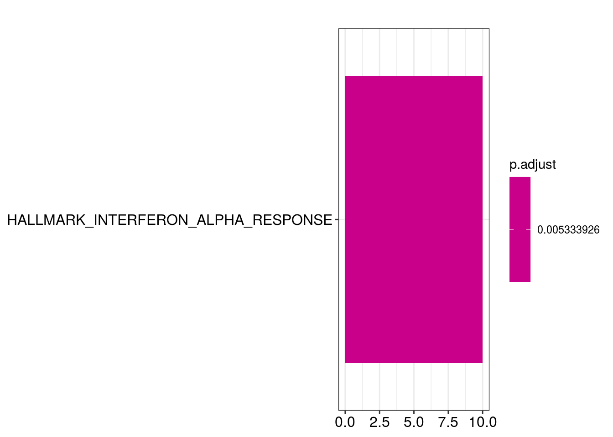
dot1 <- clusterProfiler::dotplot(em2, showCategory=10) + ggtitle("GSEA for SF3B1") +
theme_pubr() +
theme(legend.position="right") +
theme(plot.title = element_text(face = "bold")) wrong orderBy parameter; set to default `orderBy = "x"`dot1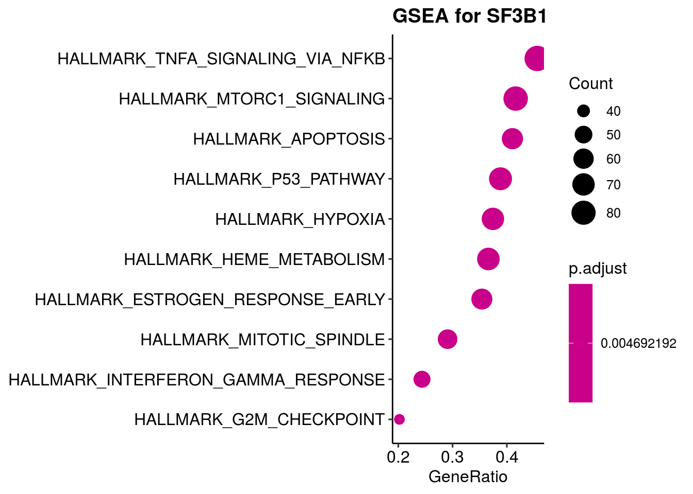
dotplot(em, showCategory=10) + ggtitle("Enrichment for SF3B1")wrong orderBy parameter; set to default `orderBy = "x"`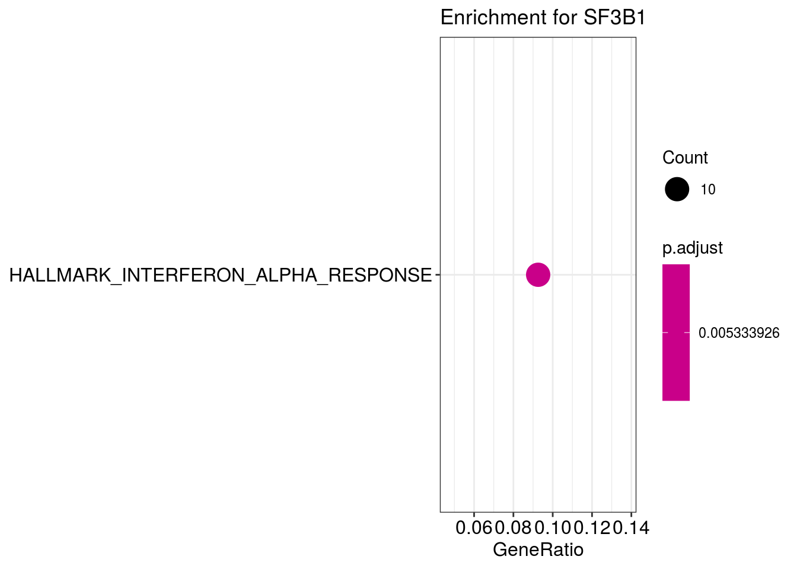
dotplot(kk2, showCategory=10) + ggtitle("GSEA for SF3B1")wrong orderBy parameter; set to default `orderBy = "x"`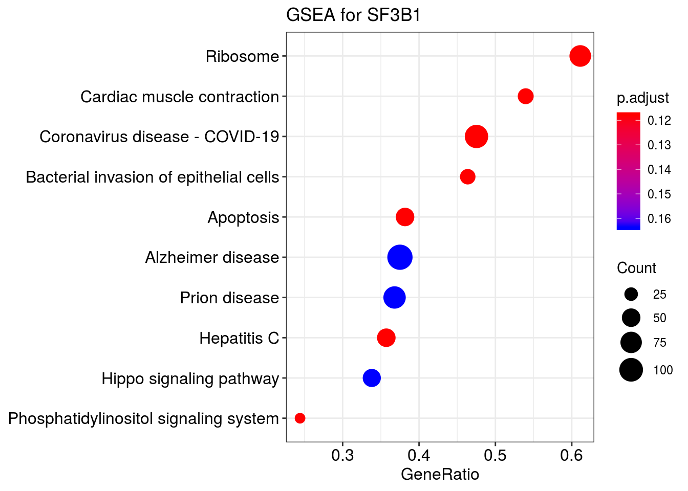
dot2 <- clusterProfiler::dotplot(kk, showCategory=10) + ggtitle("Enrichment for SF3B1") +
theme_pubr() +
theme(legend.position="right") +
theme(plot.title = element_text(face = "bold"))wrong orderBy parameter; set to default `orderBy = "x"`dot2
ridgeplot(em2)Picking joint bandwidth of 0.366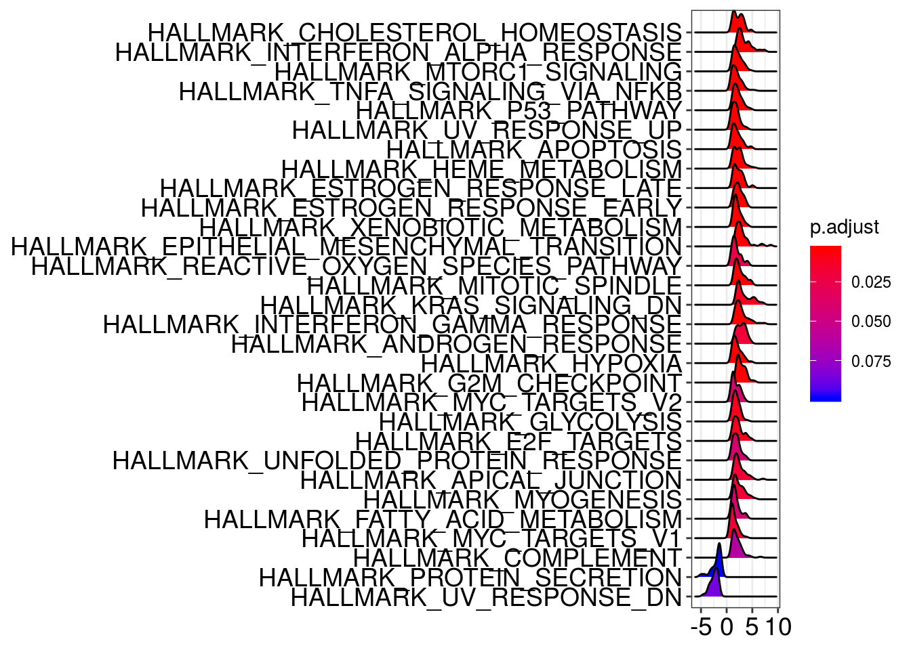
ridgeplot(kk2)Picking joint bandwidth of 0.306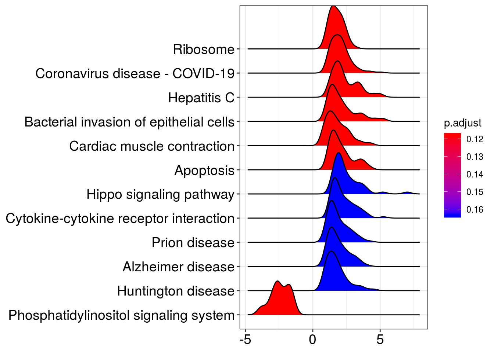
gseaplot2(em2, geneSetID = 3, title = em2$Description[3])
gseaplot2(kk2, geneSetID = 2, title = kk2$Description[2])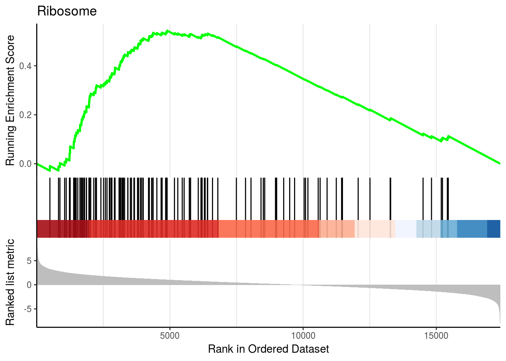
saveRDS(dot1, file = paste0(output_dir, "/figures/r_objects/SF3B1/enrich_dot_hm.rds"))
saveRDS(dot2, file = paste0(output_dir, "/figures/r_objects/SF3B1/enrich_dot2.rds"))network plot
# Networks Hallmark
em2_sub <- em2
em2_sub@result <- em2@result[which(em2@result$Description %in% c("HALLMARK_TNFA_SIGNALING_VIA_NFKB",
"HALLMARK_INTERFERON_ALPHA_RESPONSE",
"HALLMARK_APOPTOSIS")),]
p_net <- cnetplot(em2_sub, categorySize="pvalue", foldChange=gene_lfc) +
scale_colour_gradientn(colors = c("#581845", "#900C3F", "#C70039", "#FF5733", "#FFC300", "#DAF7A6")) +
guides(size = FALSE) +
labs(color = "logFC")Scale for 'colour' is already present. Adding another scale for
'colour', which will replace the existing scale.p_net 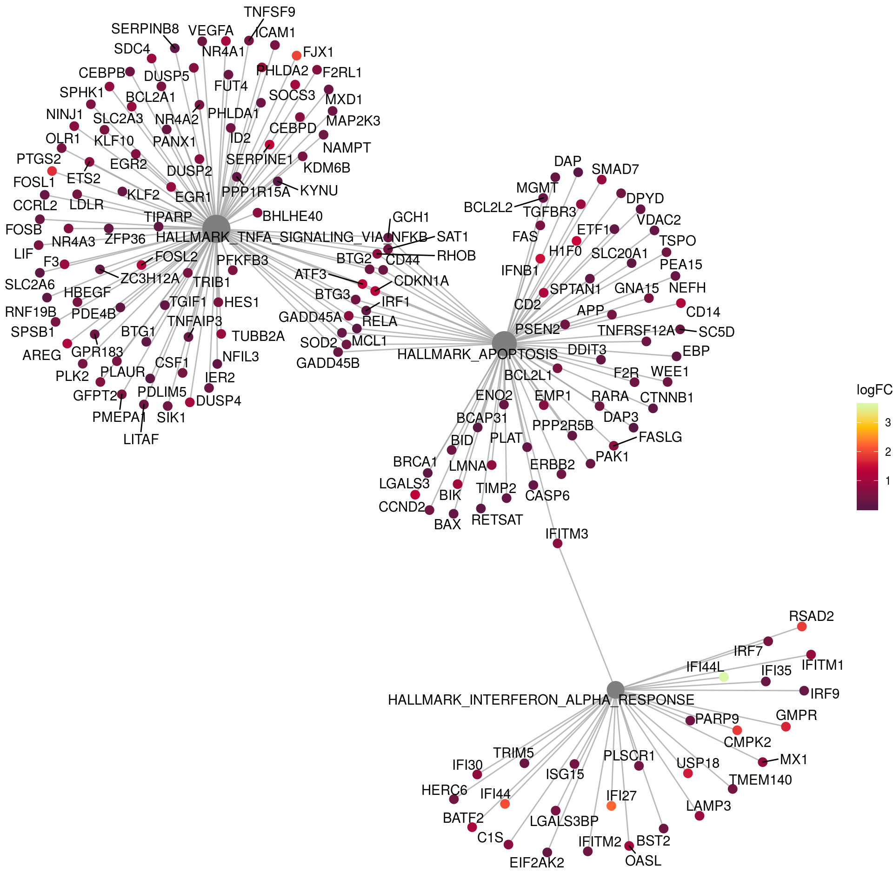
# Networks KEGG
kk2_sub <- kk2x
kk2_sub@result <- kk2x@result[which(kk2x@result$Description %in% c("Cytokine-cytokine receptor interaction",
"Phosphatidylinositol signaling system"
)),]
pnet_kegg <- cnetplot(kk2_sub, categorySize="pvalue", foldChange=gene_lfc) +
scale_color_gradient(high="blue", low="red") +
guides(size = FALSE) +
labs(color = "logFC")Scale for 'colour' is already present. Adding another scale for
'colour', which will replace the existing scale.pnet_kegg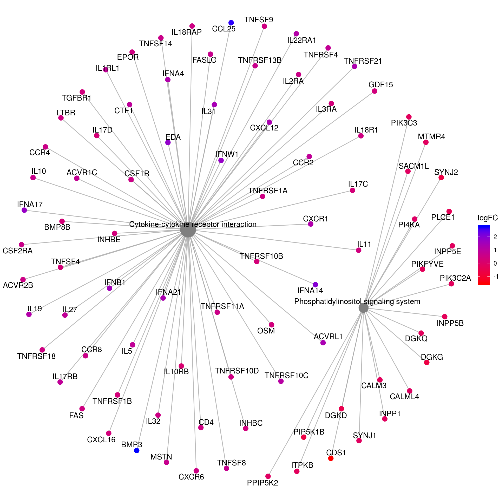
saveRDS(pnet_kegg, file = paste0(output_dir, "/figures/r_objects/SF3B1/enrich_net_kegg.rds"))
saveRDS(p_net, file = paste0(output_dir, "/figures/r_objects/SF3B1/enrich_net_hm.rds"))heatplot
heatplot(em2, foldChange=gene_lfc, showCategory = 3)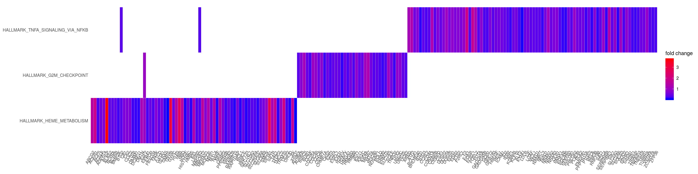
heatplot(kk2x, foldChange=gene_lfc, showCategory = 3 ) 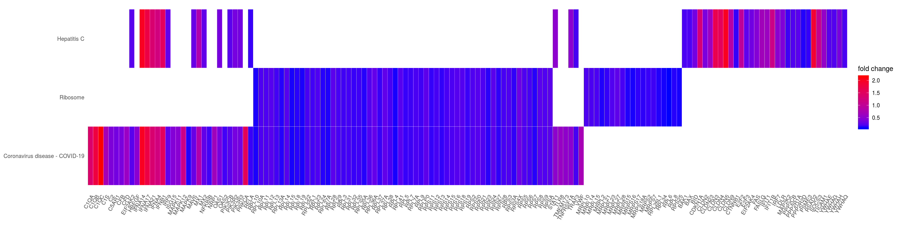
sessionInfo()R version 3.6.3 (2020-02-29)
Platform: x86_64-pc-linux-gnu (64-bit)
Running under: Ubuntu 16.04.7 LTS
Matrix products: default
BLAS: /usr/lib/libblas/libblas.so.3.6.0
LAPACK: /usr/lib/lapack/liblapack.so.3.6.0
locale:
[1] LC_CTYPE=de_DE.UTF-8 LC_NUMERIC=C
[3] LC_TIME=de_DE.UTF-8 LC_COLLATE=de_DE.UTF-8
[5] LC_MONETARY=de_DE.UTF-8 LC_MESSAGES=de_DE.UTF-8
[7] LC_PAPER=de_DE.UTF-8 LC_NAME=C
[9] LC_ADDRESS=C LC_TELEPHONE=C
[11] LC_MEASUREMENT=de_DE.UTF-8 LC_IDENTIFICATION=C
attached base packages:
[1] grid parallel stats4 stats graphics grDevices utils
[8] datasets methods base
other attached packages:
[1] here_0.1 enrichplot_1.4.0
[3] org.Hs.eg.db_3.8.2 AnnotationDbi_1.46.0
[5] msigdbr_7.0.1 clusterProfiler_3.12.0
[7] RColorBrewer_1.1-2 ggpubr_0.2
[9] magrittr_1.5 gridExtra_2.3
[11] circlize_0.4.6 gtable_0.3.0
[13] ComplexHeatmap_2.0.0 genefilter_1.66.0
[15] reshape2_1.4.3 piano_2.0.2
[17] ggsci_2.9 forcats_0.4.0
[19] stringr_1.4.0 dplyr_0.8.1
[21] purrr_0.3.2 readr_1.3.1
[23] tidyr_0.8.3 tibble_2.1.3
[25] ggplot2_3.1.1 tidyverse_1.2.1
[27] DESeq2_1.24.0 SummarizedExperiment_1.14.0
[29] DelayedArray_0.10.0 BiocParallel_1.18.0
[31] matrixStats_0.54.0 Biobase_2.44.0
[33] GenomicRanges_1.36.0 GenomeInfoDb_1.20.0
[35] IRanges_2.18.1 S4Vectors_0.22.0
[37] BiocGenerics_0.30.0
loaded via a namespace (and not attached):
[1] shinydashboard_0.7.1 tidyselect_0.2.5 RSQLite_2.1.1
[4] htmlwidgets_1.3 munsell_0.5.0 DT_0.7
[7] withr_2.1.2 colorspace_1.4-1 GOSemSim_2.10.0
[10] knitr_1.23 rstudioapi_0.10 DOSE_3.10.2
[13] labeling_0.3 git2r_0.25.2 slam_0.1-45
[16] urltools_1.7.3 GenomeInfoDbData_1.2.1 polyclip_1.10-0
[19] bit64_0.9-7 farver_2.0.3 rprojroot_1.3-2
[22] generics_0.0.2 xfun_0.7 sets_1.0-18
[25] R6_2.4.0 clue_0.3-57 graphlayouts_0.6.0
[28] locfit_1.5-9.1 bitops_1.0-6 fgsea_1.10.0
[31] gridGraphics_0.5-0 assertthat_0.2.1 promises_1.0.1
[34] scales_1.0.0 ggraph_2.0.2 nnet_7.3-14
[37] tidygraph_1.1.2 workflowr_1.4.0 rlang_0.3.4
[40] GlobalOptions_0.1.0 splines_3.6.3 lazyeval_0.2.2
[43] acepack_1.4.1 broom_0.5.2 europepmc_0.3
[46] checkmate_1.9.3 BiocManager_1.30.4 yaml_2.2.0
[49] modelr_0.1.4 backports_1.1.4 httpuv_1.5.1
[52] qvalue_2.16.0 Hmisc_4.2-0 tools_3.6.3
[55] relations_0.6-8 ggplotify_0.0.5 gplots_3.0.1.1
[58] ggridges_0.5.2 Rcpp_1.0.1 plyr_1.8.4
[61] base64enc_0.1-3 visNetwork_2.0.7 progress_1.2.2
[64] zlibbioc_1.30.0 RCurl_1.95-4.12 prettyunits_1.0.2
[67] rpart_4.1-15 GetoptLong_0.1.7 viridis_0.5.1
[70] cowplot_0.9.4 haven_2.1.0 ggrepel_0.8.1
[73] cluster_2.1.0 fs_1.3.1 data.table_1.12.2
[76] DO.db_2.9 triebeard_0.3.0 whisker_0.3-2
[79] hms_0.4.2 shinyjs_1.0 mime_0.7
[82] evaluate_0.14 xtable_1.8-4 XML_3.98-1.20
[85] readxl_1.3.1 shape_1.4.4 compiler_3.6.3
[88] KernSmooth_2.23-15 crayon_1.3.4 htmltools_0.3.6
[91] later_0.8.0 Formula_1.2-3 geneplotter_1.62.0
[94] lubridate_1.7.4 DBI_1.0.0 tweenr_1.0.1
[97] MASS_7.3-53 Matrix_1.3-0 cli_1.1.0
[100] marray_1.62.0 gdata_2.18.0 igraph_1.2.4.1
[103] pkgconfig_2.0.2 rvcheck_0.1.8 foreign_0.8-76
[106] xml2_1.2.0 annotate_1.62.0 XVector_0.24.0
[109] rvest_0.3.4 digest_0.6.19 rmarkdown_1.13
[112] cellranger_1.1.0 fastmatch_1.1-0 htmlTable_1.13.1
[115] shiny_1.3.2 gtools_3.8.1 rjson_0.2.20
[118] nlme_3.1-151 jsonlite_1.6 viridisLite_0.3.0
[121] limma_3.40.2 pillar_1.4.1 lattice_0.20-38
[124] httr_1.4.0 survival_2.44-1.1 GO.db_3.8.2
[127] glue_1.3.1 UpSetR_1.4.0 png_0.1-7
[130] bit_1.1-14 ggforce_0.3.1 stringi_1.4.3
[133] blob_1.1.1 latticeExtra_0.6-28 caTools_1.17.1.2
[136] memoise_1.1.0